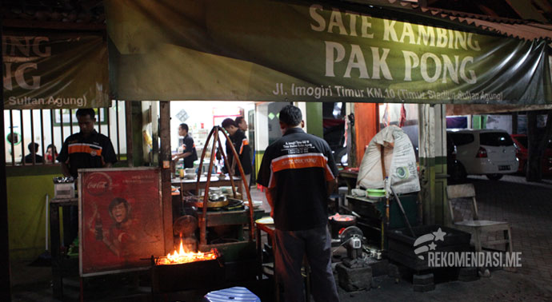
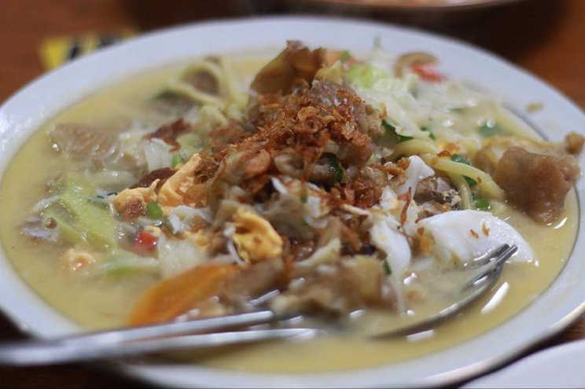
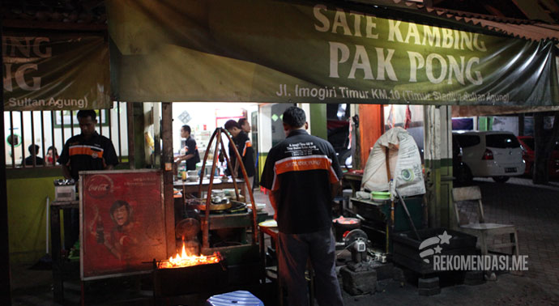
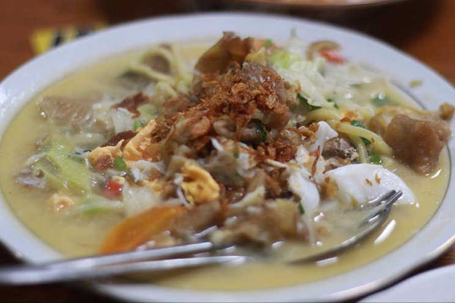

About Kuliner Jogja
Kuliner Jogja menawarkan berbagai hidangan khas yang mencerminkan kekayaan budaya dan tradisi Yogyakarta. Dari Gudeg yang manis dan gurih, Sate Klathak yang khas dengan daging kambingnya, hingga Bakpia sebagai oleh-oleh yang populer, setiap makanan memiliki cita rasa unik. Selain itu, Kopi Joss, Angkringan, dan berbagai kuliner lainnya memberikan pengalaman kuliner yang tak terlupakan bagi wisatawan. Jelajahi kekayaan rasa dan kelezatan yang hanya bisa ditemukan di Yogyakarta..
 


